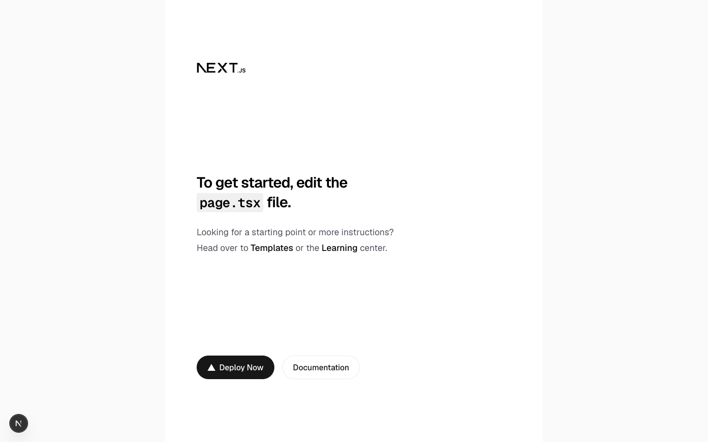

로컬 개발환경 만들기
빈 폴더에서 시작해서 Next.js · Strapi · PostgreSQL이 내 PC에서 모두 뜨는 상태까지 만듭니다. 이 장의 명령과 파일을 순서대로 따라 하면 누구나 같은 결과가 나옵니다.
http://localhost:3000(Next.js)과 http://localhost:1337/admin(Strapi)이 열리고, Strapi가 Docker의 PostgreSQL에 연결된 상태를 만든다.
진행 지도
| 단계 | 하는 일 | 끝나면 |
|---|---|---|
| 0 | 도구 준비 | 명령어 5개가 동작 |
| 1 | 저장소 뼈대 | 설정 파일 5개가 있는 폴더 |
| 2 | DB 컨테이너 | PostgreSQL 실행 중 |
| 3 | Strapi 설치 | 관리자 화면이 열림 |
| 4 | Next.js 설치 | 초기 화면이 열림 |
| 5 | 코드 검사 도구와 첫 커밋 | 01장 완료 |
0. 도구 준비
| 도구 | 용도 | 설치 | 확인 명령 |
|---|---|---|---|
| Node.js 24 | Next.js와 Strapi를 실행합니다 | nvm으로 nvm install 24 | node -v → v24.x.x |
| pnpm 12 | 패키지를 설치하고 관리합니다 | Node 설치 후 npx get-pnpm → 터미널을 새로 열기 | pnpm -v → 12.x.x |
| Docker | DB를 컨테이너로 실행합니다 | Docker Desktop 등 | docker compose version |
| Git | 버전을 관리합니다 | OS 기본 또는 공식 사이트 | git --version |
| 에디터 | 코드를 편집합니다 | VS Code 권장 |
1. 저장소 뼈대
화면(web)과 CMS(cms)를 하나의 저장소에서 관리합니다(모노레포). "스키마 변경 + 화면 변경"을 한 번에 리뷰하고 배포할 수 있습니다.
실행 위치: 작업용 폴더 (예: ~/work)
mkdir 3tier-strapi-nextjs
cd 3tier-strapi-nextjs
git init -b main
mkdir apps이어서 아래 5개 파일을 저장소 루트에 만듭니다. 내용을 그대로 복사해 붙여 넣으세요.
.nvmrc
24Node 버전을 고정합니다. 팀원, CI, 배포 환경이 모두 같은 버전을 씁니다. 폴더에서 nvm use를 실행하면 이 버전으로 바뀝니다.
pnpm-workspace.yaml
packages:
- apps/*
- infra
# 설치할 때 패키지의 빌드 스크립트(postinstall 등)를 실행할지 정합니다.
# pnpm 은 기본적으로 모두 막고, 여기에 적히지 않은 패키지가 스크립트를 가지고 있으면 설치를 멈춥니다 (공급망 공격 방지).
# 아래 패키지는 스크립트를 실행하지 않아도 동작하므로 모두 false(실행 안 함)로 둡니다.
allowBuilds:
"@swc/core": false
core-js-pure: false
esbuild: falseapps/ 아래의 폴더와 infra(나중에 만듦)를 하나의 작업공간으로 묶습니다.
pnpm이 막아 주는 두 가지 (공급망 공격 방지)
공급망 공격은 누군가 유명 패키지에 악성 코드를 섞어 공개하고, 그걸 설치한 PC나 서버에서 코드가 실행되게 하는 공격입니다. pnpm 12는 기본 설정으로 두 가지를 막습니다.
| 막는 것 | 내용 |
|---|---|
| 설치할 때 스크립트 실행 | 위의 allowBuilds에서 허용한 패키지만 스크립트를 실행합니다. 새 패키지를 추가했는데 ERR_PNPM_IGNORED_BUILDS가 나오면, 그 패키지를 여기에 적고 true/false를 정합니다 |
| 막 공개된 버전 | 공개된 지 하루가 안 된 버전은 설치하지 않고, 그 전 버전을 씁니다. 악성 버전은 대개 하루 안에 발견되어 삭제되기 때문입니다 |
package.json
{
"name": "3tier-strapi-nextjs",
"private": true,
"packageManager": "pnpm@12.6.0",
"engines": {
"node": ">=24 <25"
},
"scripts": {
"dev:db": "docker compose up -d --wait",
"dev:cms": "pnpm -F cms develop",
"dev:web": "pnpm -F web dev",
"lint": "biome check",
"format": "biome check --write",
"typecheck": "pnpm -r typecheck",
"build": "pnpm -r build"
},
"devDependencies": {
"@biomejs/biome": "2.5.14"
}
}자주 쓰는 명령을 저장소 루트에 모았습니다. 예: pnpm dev:cms = "cms 앱의 develop 명령 실행". packageManager는 pnpm 버전을 고정합니다.
.gitignore
# 의존성·빌드 결과
node_modules/
dist/
build/
.next/
out/
.strapi/
.tmp/
*.tsbuildinfo
# CDK
infra/cdk.out/
# 환경변수 (절대 커밋하지 않는다. 예시는 .env.example 로)
.env
.env.*
!.env.example
# Strapi 로컬 업로드 파일 (데이터는 git 이 아니라 DB/S3 에 있다)
apps/cms/public/uploads/*
!apps/cms/public/uploads/.gitkeep
# 기타
.DS_Store
*.log.editorconfig
root = true
[*]
charset = utf-8
end_of_line = lf
indent_style = space
indent_size = 2
insert_final_newline = true
trim_trailing_whitespace = true어떤 에디터를 쓰든 들여쓰기와 줄바꿈 규칙이 같아지게 합니다.
3tier-strapi-nextjs/ ├── .editorconfig ├── .gitignore ├── .nvmrc ├── package.json ├── pnpm-workspace.yaml └── apps/ (비어 있음)
2. DB 컨테이너 (PostgreSQL)
DB는 PC에 설치하지 않고 Docker 컨테이너로 실행합니다. 누구의 PC에서든 같은 버전이 뜨고, 필요 없으면 통째로 지울 수 있습니다.
compose.yaml (저장소 루트)
# 로컬 개발용 DB 입니다. 앱(web/cms)은 컨테이너가 아니라 pnpm dev 로 직접 실행합니다.
# 운영(Aurora PostgreSQL)과 같은 메이저 버전을 씁니다.
services:
db:
image: postgres:17-alpine
environment:
POSTGRES_DB: strapi
POSTGRES_USER: strapi
POSTGRES_PASSWORD: strapi # 로컬 전용 값. 운영 비밀번호는 Secrets Manager 가 생성합니다
ports:
- "5432:5432"
volumes:
- db-data:/var/lib/postgresql/data # 컨테이너를 지워도 데이터가 남도록
healthcheck:
test: ["CMD-SHELL", "pg_isready -U strapi -d strapi"]
interval: 5s
timeout: 3s
retries: 10
volumes:
db-data:| 항목 | 의미 |
|---|---|
image | 사용할 공식 이미지. 운영 DB와 메이저 버전(17)을 맞춥니다 |
environment | 처음 기동할 때 만들 DB 이름, 사용자, 비밀번호 |
ports | PC의 포트 → 컨테이너의 포트 연결 |
volumes | DB 파일을 보관하는 장소. 컨테이너를 다시 만들어도 데이터가 남습니다 |
healthcheck | DB가 접속을 받을 준비가 됐는지 확인합니다. --wait는 이 확인이 끝날 때까지 기다립니다 |
Dockerfile과 compose.yaml은 무엇이 다른가요?
Dockerfile은 "이미지를 만드는 레시피"로, 우리 앱을 배포할 때 씁니다(06장). compose.yaml은 "이미 있는 이미지를 어떤 설정으로 실행할지"를 적은 파일입니다. PostgreSQL은 공식 이미지가 있으므로 compose.yaml만 있으면 됩니다.
실행 위치: 저장소 루트
pnpm dev:db
docker compose psSTATUS에 Up ... (healthy)가 표시됩니다.
3tier-strapi-nextjs/ ├── .editorconfig ├── .gitignore ├── .nvmrc ├── compose.yaml ├── package.json ├── pnpm-workspace.yaml └── apps/
3. Strapi(CMS) 설치
3-1. 생성
실행 위치: 저장소 루트
npx create-strapi@latest apps/cms \
--ts --use-pnpm --install --no-run --skip-cloud --no-example --no-git-init \
--dbclient postgres --dbhost 127.0.0.1 --dbport 5432 \
--dbname strapi --dbusername strapi --dbpassword strapi --dbssl false| 옵션 | 의미 |
|---|---|
--ts | TypeScript로 생성합니다 |
--use-pnpm --install | pnpm으로 의존성까지 설치합니다 |
--no-run | 생성 후 자동으로 기동하지 않습니다 |
--skip-cloud | Strapi Cloud(유료 호스팅) 로그인을 건너뜁니다. 우리는 AWS에 배포합니다 |
--no-example | 예제 데이터 없이 빈 상태로 시작합니다 |
--no-git-init | 저장소 루트에 이미 git이 있으므로 새로 만들지 않습니다 |
--db* | 2단계의 DB 컨테이너 접속 정보. apps/cms/.env에 기록됩니다 |
3-2. 모노레포에 맞게 정리
생성기는 "단독 프로젝트"를 전제로 만들기 때문에, 모노레포에 맞게 조금 정리합니다.
실행 위치: apps/cms
cd apps/cms
# Strapi Cloud 전용 플러그인과 명령을 제거 (AWS에 배포하므로 불필요)
pnpm remove @strapi/plugin-cloud
npm pkg delete scripts.deploy scripts.upgrade "scripts.upgrade:dry"
# pnpm 설정은 루트(pnpm-workspace.yaml) 하나로 모았으므로 삭제
npm pkg delete pnpm
# 타입 검사 명령 추가, Node 24 타입 정의로 변경
npm pkg set scripts.typecheck="tsc --noEmit"
pnpm add -D @types/node@^24
cd ../..3-3. 환경변수 파일
apps/cms/.env는 생성기가 자동으로 만들고, 시크릿 칸에 무작위 값을 넣어 줍니다. 이 파일은 커밋하지 않습니다. 대신 "어떤 값이 필요한지"를 알려 주는 .env.example을 아래 내용으로 덮어써서 커밋합니다.
apps/cms/.env.example
# Strapi 로컬 개발용 환경변수 예시입니다.
# `cp .env.example .env` 로 복사한 뒤, 아래 시크릿 값을 `openssl rand -base64 32` 결과로 바꾸세요.
# 운영(AWS)에서는 이 파일을 쓰지 않습니다. 같은 이름의 값을 ECS 가 Secrets Manager 에서 주입합니다.
HOST=0.0.0.0
PORT=1337
# 세션 쿠키·토큰 서명용 시크릿
APP_KEYS="toBeModified1,toBeModified2"
API_TOKEN_SALT=tobemodified
ADMIN_JWT_SECRET=tobemodified
TRANSFER_TOKEN_SALT=tobemodified
JWT_SECRET=tobemodified
ENCRYPTION_KEY=tobemodified
# DB (저장소 루트의 compose.yaml 로 띄운 PostgreSQL)
DATABASE_CLIENT=postgres
DATABASE_HOST=127.0.0.1
DATABASE_PORT=5432
DATABASE_NAME=strapi
DATABASE_USERNAME=strapi
DATABASE_PASSWORD=strapi
DATABASE_SSL=false각 시크릿은 무엇에 쓰이나요?
| 변수 | 쓰이는 곳 | 값이 바뀌면 |
|---|---|---|
APP_KEYS | 로그인 세션 쿠키에 서명(위조 방지 도장) | 로그인 세션이 무효가 됩니다 |
ADMIN_JWT_SECRET | 관리자 화면의 로그인 토큰에 서명 | 관리자가 다시 로그인해야 합니다 |
API_TOKEN_SALT | API 토큰(03장에서 Next.js용으로 발급)을 DB에 저장할 때 섞는 값 | 발급한 API 토큰이 전부 무효가 됩니다 |
ENCRYPTION_KEY | 발급한 토큰을 관리자 화면에서 다시 볼 수 있도록 암호화 | 저장된 토큰을 표시할 수 없게 됩니다 |
TRANSFER_TOKEN_SALT | 환경 간 데이터 복사 기능용 토큰 | 해당 토큰이 무효가 됩니다 |
JWT_SECRET | 사이트 회원 로그인 (이번 실습에서는 사용하지 않음) | 회원이 다시 로그인해야 합니다 |
DATABASE_* | DB 접속 정보 | DB에 연결할 수 없습니다 |
시크릿은 환경마다 다른 값을 쓰고, 한번 정하면 함부로 바꾸지 않습니다.
Strapi는 이 값을 어떻게 읽고, 운영(AWS)에서는 어떻게 전달하나요?
Strapi의 설정 파일(apps/cms/config/*.ts)은 값을 직접 쓰지 않고 환경변수를 읽습니다.
// apps/cms/config/database.ts (생성기가 만든 코드, 발췌)
host: env('DATABASE_HOST', 'localhost'),
port: env.int('DATABASE_PORT', 5432),로컬에서는 .env 파일이 환경변수가 됩니다. 운영에서는 .env가 없고, 이렇게 전달됩니다.
- 시크릿은 AWS Secrets Manager에 보관합니다(인프라 코드가 무작위로 생성).
- ECS(Fargate)의 설정에 "환경변수
APP_KEYS← Secrets Manager의 ○○"처럼 참조만 적습니다. - 컨테이너가 시작될 때 ECS가 값을 꺼내 환경변수로 주입합니다.
- Strapi는 로컬과 똑같이
env('APP_KEYS')로 읽습니다. 코드는 그대로입니다.
시크릿이 Git에도, 컨테이너 이미지에도 남지 않는 것이 핵심입니다(06장에서 실제로 설정합니다).
3-4. 기동 확인
실행 위치: 저장소 루트
pnpm install
pnpm dev:cms터미널에 Database: postgres와 Strapi started successfully가 표시되고, http://localhost:1337/admin에서 관리자 등록 화면이 열립니다. 등록은 02장에서 합니다. 확인했으면 Ctrl + C로 멈춥니다.
3tier-strapi-nextjs/
├── .editorconfig .gitignore .nvmrc compose.yaml
├── package.json
├── pnpm-workspace.yaml
├── pnpm-lock.yaml 설치된 패키지 버전 기록 (커밋함)
├── node_modules/ (커밋하지 않음)
└── apps/
└── cms/
├── config/ 서버·DB·플러그인 설정 (코드)
│ ├── admin.ts api.ts database.ts
│ └── middlewares.ts plugins.ts server.ts
├── database/migrations/
├── public/uploads/ 로컬에 업로드한 파일 (커밋하지 않음)
├── src/
│ ├── admin/ 관리자 화면 커스터마이즈 (이번에는 사용 안 함)
│ ├── api/ ← 02장에서 화면으로 만든 스키마가 여기에 생깁니다
│ └── index.ts
├── types/generated/ 자동 생성 타입
├── .env 시크릿 (커밋하지 않음)
├── .env.example
├── package.json
└── tsconfig.json4. Next.js(화면) 설치
4-1. 생성
실행 위치: 저장소 루트
npx create-next-app@latest apps/web \
--ts --tailwind --biome --app --src-dir --import-alias '@/*' \
--use-pnpm --skip-install --disable-git| 옵션 | 의미 |
|---|---|
--app | App Router를 씁니다. 서버 컴포넌트(서버에서만 실행되는 코드)를 쓸 수 있어서 API 토큰을 브라우저에 숨길 수 있습니다 |
--tailwind | CSS 프레임워크 Tailwind CSS를 씁니다 |
--biome | 코드 검사 도구로 Biome을 씁니다 |
--src-dir | 코드를 src/ 아래에 둡니다 |
--skip-install --disable-git | 설치와 git은 저장소 루트에서 관리하므로 건너뜁니다 |
4-2. 모노레포에 맞게 정리
실행 위치: 저장소 루트
# 생성기가 만든 pnpm 설정은 루트 것과 중복되므로 삭제
rm apps/web/pnpm-workspace.yaml
# Biome 설정은 루트로 옮겨 web과 cms 모두에 적용 (5단계에서 내용 교체)
mv apps/web/biome.json biome.json
cd apps/web
npm pkg delete packageManager scripts.lint scripts.format "devDependencies.@biomejs/biome"
# Next.js 가 만드는 타입(LayoutProps 등)을 먼저 생성한 뒤 검사 (CI 처럼 처음 받은 상태에서도 통과하도록)
npm pkg set scripts.typecheck="next typegen && tsc --noEmit"
cd ../..
pnpm add -D @types/node@^24 --filter web
pnpm install
pnpm dev:web
Ctrl + C로 멈춥니다5. 코드 검사 도구(Biome)와 첫 커밋
Biome은 코드 모양 통일(포맷)과 실수 검출(린트)을 한 번에 하는 도구입니다. 저장소 루트의 biome.json을 아래 내용으로 바꿔서 web과 cms 전체에 같은 규칙을 적용합니다.
biome.json (저장소 루트)
{
"$schema": "https://biomejs.dev/schemas/2.5.14/schema.json",
"vcs": { "enabled": true, "clientKind": "git", "useIgnoreFile": true },
"files": {
"ignoreUnknown": true,
"includes": [
"**",
"!**/node_modules",
"!**/.next",
"!**/dist",
"!**/build",
"!**/.strapi",
"!**/types/generated",
"!**/cdk.out",
"!**/*.svg",
"!docs"
]
},
"formatter": { "enabled": true, "indentStyle": "space", "indentWidth": 2 },
"css": { "parser": { "tailwindDirectives": true } },
"linter": {
"enabled": true,
"rules": { "preset": "recommended" },
"domains": { "next": "recommended", "react": "recommended" }
},
"assist": { "actions": { "source": { "organizeImports": "on" } } }
}각 항목의 의미
| 항목 | 의미 |
|---|---|
vcs.useIgnoreFile | .gitignore에 있는 파일은 검사하지 않습니다 |
files.includes | !가 붙은 것은 제외합니다(자동 생성 파일, 빌드 결과, 이미지(svg), 문서) |
formatter | 들여쓰기 2칸 등 코드 모양을 통일합니다 |
linter.rules.preset | recommended = 사용하지 않는 변수, 잘못된 비교 등 흔한 실수를 찾는 기본 규칙 모음 |
domains | Next.js와 React 전용 규칙을 켭니다 |
organizeImports | import 순서를 자동으로 정렬합니다 |
실행 위치: 저장소 루트
pnpm install
pnpm format # 전체 코드를 규칙에 맞게 자동 수정
pnpm lint # 검사만 (오류가 없으면 성공)
git add .
git commit -m "chore: ローカル開発環境を構築"Strapi가 생성한 설정 파일에서 Found 6 warnings 같은 경고가 표시될 수 있습니다. 생성기의 코드 스타일 때문에 나오는 경고라서 무시해도 됩니다. error가 없으면 됩니다.
커밋이란? 메시지는 어떻게 쓰나요?
커밋은 "지금 상태를 저장 지점으로 기록하는 것"입니다. 이 자료에서는 장이 끝날 때마다 하나씩 커밋합니다. 문제가 생기면 이전 지점으로 되돌아갈 수 있습니다. GitHub에 올리는 것은 05장에서 합니다.
메시지는 종류: 내용 형식(Conventional Commits)으로 씁니다. 종류는 feat(기능 추가), fix(수정), chore(설정·환경), docs(문서) 정도만 알면 충분합니다. 괄호 안에는 대상(cms, web)을 적습니다. 종류: 뒤의 내용은 팀이 읽는 언어로 씁니다(이 예시는 일본어).
pnpm lint가 오류 없이 끝나고 커밋이 만들어집니다. git status에 .env와 node_modules가 나오지 않으면 .gitignore가 제대로 동작하는 것입니다.
3tier-strapi-nextjs/
├── .editorconfig
├── .gitignore
├── .nvmrc
├── biome.json
├── compose.yaml
├── package.json
├── pnpm-lock.yaml
├── pnpm-workspace.yaml
└── apps/
├── cms/ Strapi (:1337)
│ ├── config/
│ ├── src/
│ ├── .env.example
│ └── package.json
└── web/ Next.js (:3000)
├── public/
├── src/app/
│ ├── layout.tsx 모든 페이지 공통 틀
│ ├── page.tsx 첫 페이지 (04장에서 메뉴 화면으로 바꿈)
│ └── globals.css
├── next.config.ts
└── package.json매일 쓰는 명령
| 명령 (저장소 루트) | 하는 일 |
|---|---|
pnpm dev:db | DB 컨테이너 기동 |
pnpm dev:cms | Strapi 기동 (http://localhost:1337/admin) |
pnpm dev:web | Next.js 기동 (http://localhost:3000) |
pnpm lint / pnpm format | 코드 검사 / 자동 수정 |
docker compose down | DB 정지 (데이터는 남음) |
docker compose down -v | DB 정지 + 데이터 삭제(초기화) |
Strapi와 Next.js는 각각 터미널 창을 하나씩 열어서 실행합니다.
문제가 생겼을 때
| 증상 | 확인할 것 |
|---|---|
| Strapi 기동 시 DB 연결 오류 | docker compose ps가 healthy인지, apps/cms/.env의 DATABASE_* 값이 compose.yaml과 같은지 |
address already in use | 같은 포트를 다른 프로그램이 쓰고 있습니다. 해당 프로그램을 멈추거나, compose.yaml의 PC 쪽 포트와 .env의 DATABASE_PORT를 같은 값으로 바꿉니다 |
pnpm: command not found | npx get-pnpm 후 터미널을 새로 열었는지 (설치 경로가 새 터미널부터 반영됩니다) |